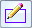

Construct a protrusion or cutout (ordered)
-
On the Home tab→Solids group, click the Extrude command
 .Note:
.Note:You can also right-click a region and select the command from the ribbon or the context toolbar.
-
Choose one of the following from the Add/Cut options list:
-
To add or remove material from the model based on the material detection, choose the Automatic option.
Note:The Automatic option is the default option.
-
To add material to the model, choose the Add option.
-
To remove material from the model, choose the Cut option.
-
To add a new body to the model, choose the Add Body option.
-
-
The Sketch Step is active. Choose one of the following from the Create-From Options list:
-
To select a profile from an existing sketch or region, choose the Select From Sketch option from the list. This option is not available if there are no sketches in the document.
-
To draw a profile, select a planar face or reference plane. The sketch view window is displayed.
-
-

Draw Profile Step—Draw or select an open or closed profile.Note:-
If no profile exists, see Draw a profile.
-
The ends of an open profile are extended infinitely—an arc with open ends is extended to form a circle.
-
For examples, see Profile-based ordered features.
-
If you are using the Extrude command to construct a base feature, the profile must be closed.
-
-
If the profile you selected is an open profile, the Side Step is active.
Click in the graphics window to define the side of the profile to which you want to add or remove material.
-
The Extent Step is active. Define the extent direction and depth of the material you want to add or remove.
-
(Optional) To apply draft or crown on a protrusion or cutout feature, click the Treatment Step on the command bar, and then define draft angle and crown parameters.
-
(Optional) If multiple bodies exist in the file, to remove material from the bodies, on the Body Selection Step, select the Cut Active or Select Cut Bodies to specify the bodies to be cut, and then click Accept.
Note:This option is active if the Add/Cut option is set to Automatic or Cut, but is inactive if the option is set to Add or Add Body.
-
Click Finish to finish the feature, and then click Cancel to exit the command.
How do I
Define the extent of an extruded featureConstruct a base feature
Construct a cutout (ordered)
Construct a hole
Construct a hole (ordered)
Construct a hole on a cylinder
Construct an extrusion: base feature
Construct an extrusion or cutout: subsequent features
Construct a protrusion or cutout: model face
Construct a Normal Protrusion
Construct a Normal Cutout (Part Environment)
Finish the Feature
Examples: Constructing Protrusions With the Finite Option
Examples: Constructing Protrusions With the Through All Option
Examples: Constructing Protrusions With the Through Next Option
Examples: Constructing Cutouts With the Through All Option
Examples: Constructing Cutouts With the Through Next Option
Examples: Constructing Cutouts With the Finite Option
Learn more
Part modeling workflow overviewPart modeling: Tips for getting started
Look up more details
Extrude command (synchronous)Extrude command bar (synchronous)
Extrude command (ordered)
Extrude command bar (ordered)
Cut command
Cut command bar
Demo: Create protrusion or cutout using keypoint
Normal Protrusion command
Normal Protrusion command bar
Normal Cutout command (Part environment)
Normal Cutout command bar (Part environment)